Alongside the er_plot() mini-grammar covered in the binary, continuous, and count articles, erplots supplies a second,
smaller mini-grammar built around er_vpc() for constructing
visual predictive checks (VPCs). A VPC compares what a model predicts
against what was actually observed, binned by exposure (or some other
variable of interest), so that any systematic mismatch between model and
data is easy to spot. The grammar is deliberately narrower than
er_plot()’s in one respect: there’s no color/facet
precedence rule to reconcile across builders, since an optional
stratify_by splits the plot into facet panels only (see
?er_vpc), never color. But the same model-agnostic
philosophy still applies – any model implementing
er_predict()/er_simulate() (see Implementing the model interface) can be
visualised this way, and this article uses the same erglm and emaxnls
models as the other articles to demonstrate it. As with
er_plot(), er_vpc() itself only sets up the
plot’s variables and bins; nothing is drawn until
er_vpc_add_observed() and
er_vpc_add_simulated() are added and the pipeline is
plotted.
Binary response
For a binary response, er_vpc_add_observed() bins the
data and computes the observed response rate (plus a confidence
interval) in each bin, and er_vpc_add_simulated() draws
nsim replicate datasets from the model and summarises those
the same way – so the two rates can be compared directly, bin by
bin.
VPC by exposure
mod <- erglm_model(ae1 ~ aucss, erglm_data, family = binomial())The default approach for binary outcomes is to bin the exposure variable by quartiles, and then show the confidence interval for the response rate for both observed and simulated:
erglm_data |>
er_vpc(exposure = aucss, response = ae1) |>
er_vpc_add_observed() |>
er_vpc_add_simulated(model = mod, seed = 1234) |>
plot()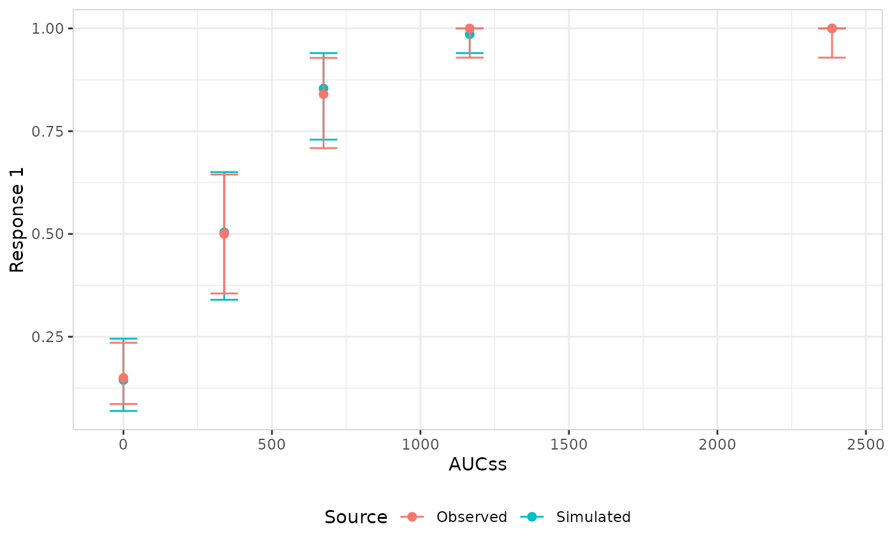
VPC by continuous covariate
The variable used to bin the data and position the x-axis,
plot_by, defaults to the exposure variable, but it doesn’t
have to be. Setting it to a different continuous variable lets you check
whether the model’s predictions track the observed data as that
variable changes, even when it isn’t part of the fitted model itself.
Here we bin by weight instead of aucss, using
the same exposure-only model as above:
erglm_data |>
er_vpc(exposure = aucss, response = ae1, plot_by = weight) |>
er_vpc_add_observed() |>
er_vpc_add_simulated(model = mod, seed = 1234) |>
plot()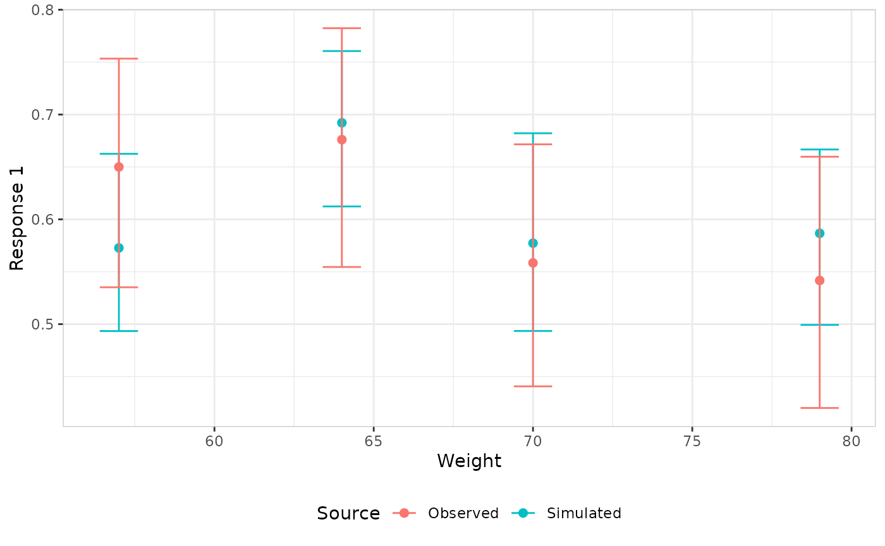
VPC by discrete covariate
The same idea applies to a categorical plot_by: there’s
no x-axis binning to do, since the categories already partition the
data, and each level gets its own position. Here we bin by
sex, using a model that actually includes sex
as a covariate, so the simulated layer’s predictions can differ between
the two groups:
mod <- erglm_model(ae1 ~ aucss + sex, erglm_data, family = binomial())
erglm_data |>
er_vpc(exposure = aucss, response = ae1, plot_by = sex) |>
er_vpc_add_observed() |>
er_vpc_add_simulated(model = mod, seed = 1234) |>
plot()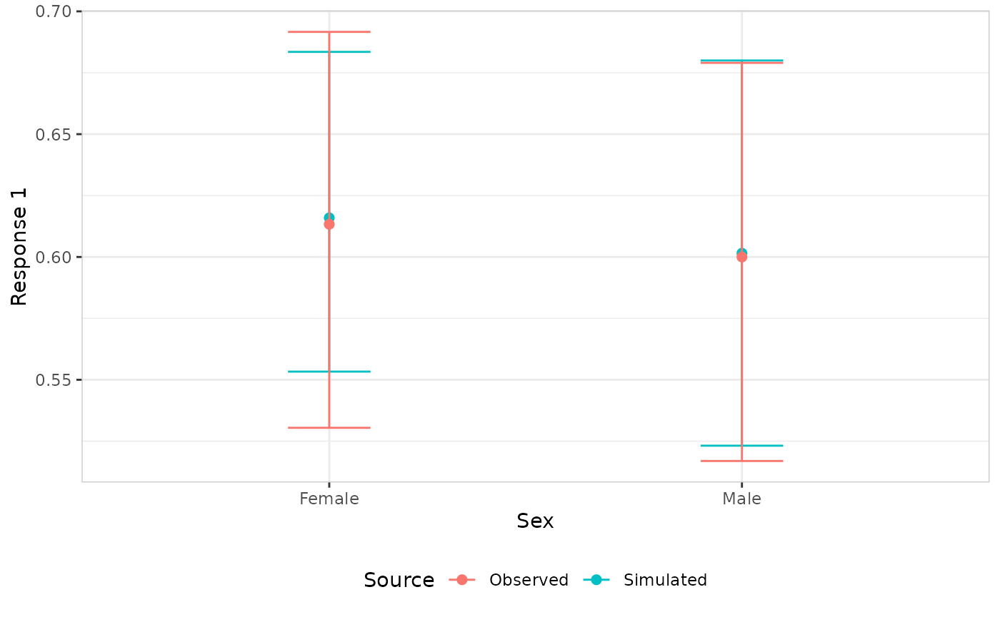
Stratified panels
plot_by changes what’s binned along the x-axis;
stratify_by instead keeps the x-axis as-is and splits the
plot into one facet panel per level of some other variable, via
ggplot2::facet_wrap(). It’s useful when you want to check
the model against a covariate without giving up the usual
exposure-response view. Unlike plot_by,
stratify_by never changes what’s plotted on the x-axis or
how it’s binned – both er_vpc_add_observed() and
er_vpc_add_simulated() behave exactly as before within each
panel.
Discrete stratify_by
A categorical stratify_by is used as-is, one panel per
level. Here we reuse the ae1 ~ aucss + sex model from
above, faceting by sex while keeping aucss on
the x-axis:
erglm_data |>
er_vpc(exposure = aucss, response = ae1, stratify_by = sex) |>
er_vpc_add_observed() |>
er_vpc_add_simulated(model = mod, seed = 1234) |>
plot()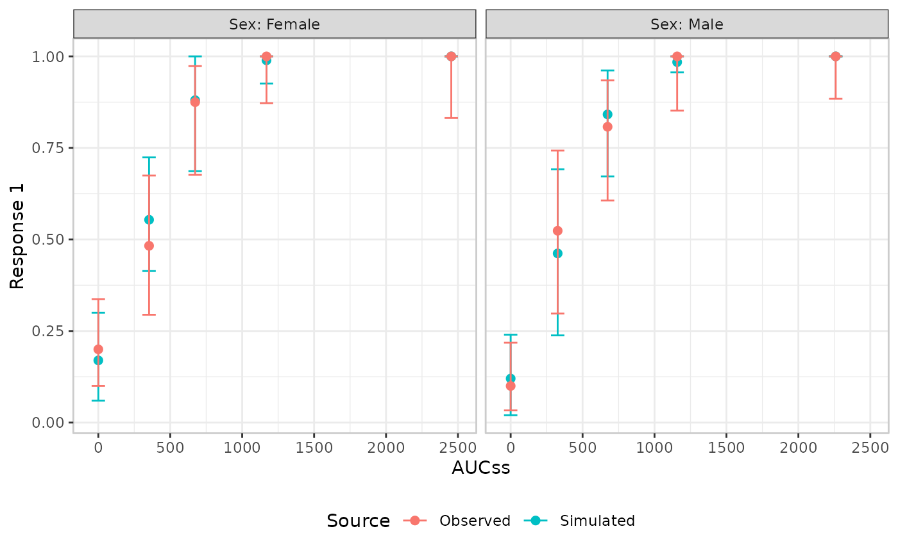
Continuous stratify_by
A numeric stratify_by is automatically split into
n_strata quantile bins (4 by default), and
er_vpc() reports a message when it does this, since it’s a
decision made on your behalf. Here we facet by weight,
overriding the default with n_strata = 3:
erglm_data |>
er_vpc(exposure = aucss, response = ae1, stratify_by = weight, n_strata = 3) |>
er_vpc_add_observed() |>
er_vpc_add_simulated(model = mod, seed = 1234) |>
plot()
#> `stratify_by` (`weight`) is numeric; splitting into 3 quantile bins for
#> faceting. Pass a categorical variable to `stratify_by`, or set `n_strata` to
#> change the bin count.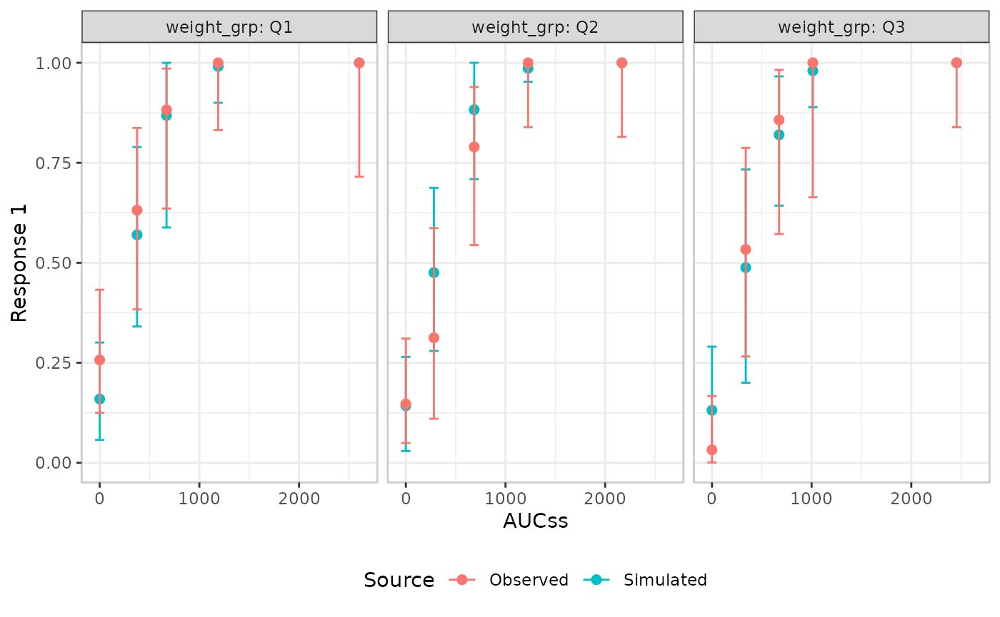
stratify_by must resolve to a different variable than
plot_by (which defaults to the exposure variable) –
faceting by the exact variable already driving the x-axis binning would
give each panel a single bin, so er_vpc() errors rather
than allow it.
Continuous response
A continuous response supports the same mean/errorbar comparison used above for binary outcomes, but it also supports a genuinely distributional comparison: checking whether the model reproduces the shape of the response distribution at each exposure level, not just its mean.
VPC by exposure
mod <- emax_nls(
structural_model = rsp_1 ~ exp_1,
covariate_model = list(E0 ~ 1, Emax ~ 1, logEC50 ~ 1),
data = emax_df
)We’ll start by showing the limitations of the default “mean plus
confidence interval” visual style. This is set as the default style for
VPCs because it has the virtue of working regardless of whether the
plot_by variable is continuous or discrete, and regardless
of whether the response variable is binary, continous or
counts. But as you can see from the plot below, it’s not the best choice
for a continuous response variable:
emax_df |>
er_vpc(exposure = exp_1, response = rsp_1) |>
er_vpc_add_observed() |>
er_vpc_add_simulated(model = mod, seed = 1234) |>
plot()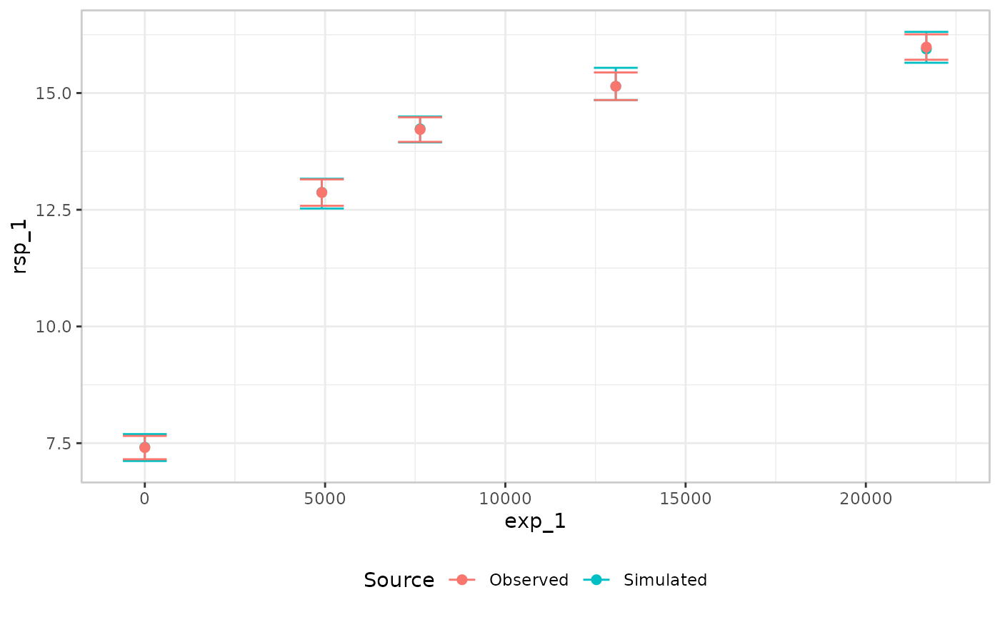
The plot renders correctly, but the only thing it shows is whether
the model can correctly predict the mean response within each bin.
Because of this, it’s almost never the best choice when the
response is continuous or count data.
As an alternative, we can switch to a genuinely distributional comparison: connected lines for several observed quantiles, and shaded ribbons showing the corresponding simulated quantiles. This style is the most commonly used approach when VPCs are applied for pharmacokinetic models, and works well for the exposure-response case with a continuous response variable:
emax_df |>
er_vpc(
exposure = exp_1,
response = rsp_1,
response_type = "continuous"
) |>
er_vpc_add_observed(style = er_style_vpc_observed_quantile_line) |>
er_vpc_add_simulated(
model = mod,
seed = 1234,
style = er_style_vpc_simulated_quantile_ribbon
) |>
plot()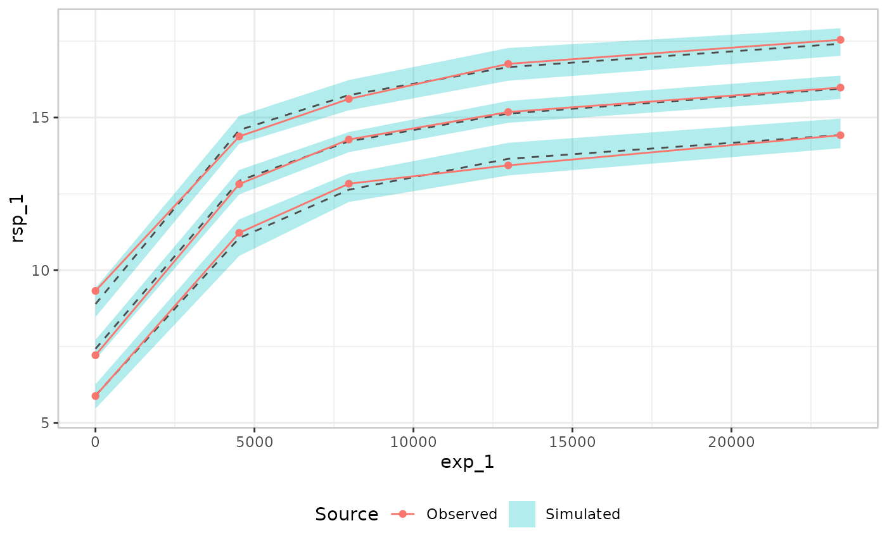
This works well, and is usually the best choice, but one thing that
is missing in this plot is an expression of uncertainty about the
observed quantiles. Sometimes that is useful to have, in which case you
can do something like this, where the ci_quantile()
function is used under the hood to construct confidence intervals for
observed quantiles:
emax_df |>
er_vpc(
exposure = exp_1,
response = rsp_1,
response_type = "continuous"
) |>
er_vpc_add_observed(style = er_style_vpc_observed_quantile_errorbar) |>
er_vpc_add_simulated(
model = mod,
seed = 1234,
style = er_style_vpc_simulated_quantile_errorbar
) |>
plot()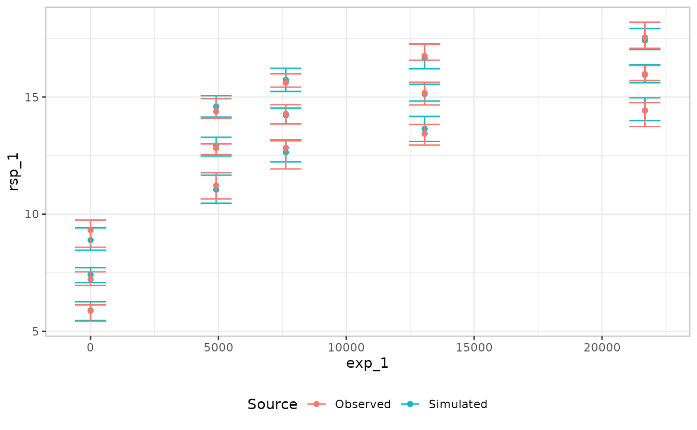
VPC by continuous covariate
As with the binary case, a continuous plot_by doesn’t
have to be the exposure variable. Here the Emax model includes a
covariate effect of cnt_a on the baseline parameter
E0, so we bin on cnt_a directly to check the
model’s percentile predictions against it. Here is the VPC plotted in an
errorbar style:
mod <- emax_nls(
structural_model = rsp_1 ~ exp_1,
covariate_model = list(E0 ~ cnt_a, Emax ~ 1, logEC50 ~ 1),
data = emax_df
)
emax_df |>
er_vpc(
exposure = exp_1,
response = rsp_1,
response_type = "continuous",
plot_by = cnt_a
) |>
er_vpc_add_observed(style = er_style_vpc_observed_quantile_errorbar) |>
er_vpc_add_simulated(
model = mod,
seed = 1234,
style = er_style_vpc_simulated_quantile_errorbar
) |>
plot()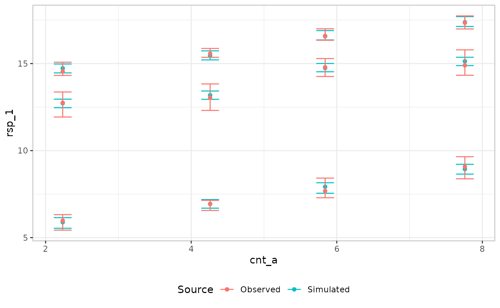
For comparison, the plot below shows the same VPC in the ribbon style. The two show the same underlying comparison styled differently; which one to use is mostly a matter of taste (and, as covered below, legibility):
emax_df |>
er_vpc(
exposure = exp_1,
response = rsp_1,
response_type = "continuous",
plot_by = cnt_a
) |>
er_vpc_add_observed(style = er_style_vpc_observed_quantile_errorbar) |>
er_vpc_add_simulated(
model = mod,
seed = 1234,
style = er_style_vpc_simulated_quantile_ribbon
) |>
plot()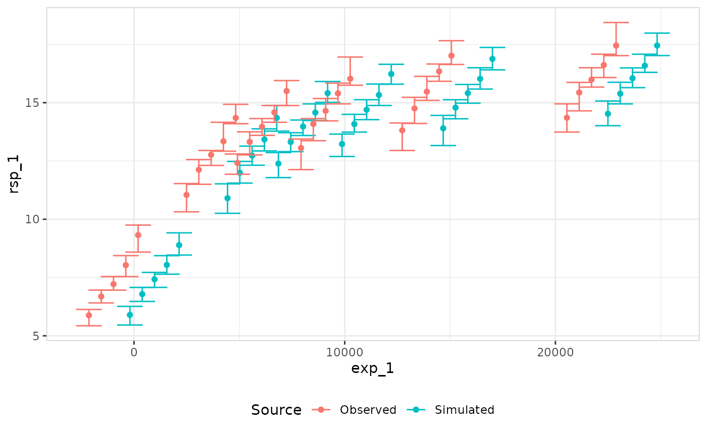
VPC by discrete covariate
As before, a categorical plot_by works with the default
mean/errorbar pair too, this time using a model that includes
sex as a covariate on the continuous response:
mod <- erglm_model(
biomarker_change ~ aucss + sex, erglm_data, family = gaussian()
)
erglm_data |>
er_vpc(exposure = aucss, response = biomarker_change, plot_by = sex) |>
er_vpc_add_observed() |>
er_vpc_add_simulated(model = mod, seed = 1234) |>
plot()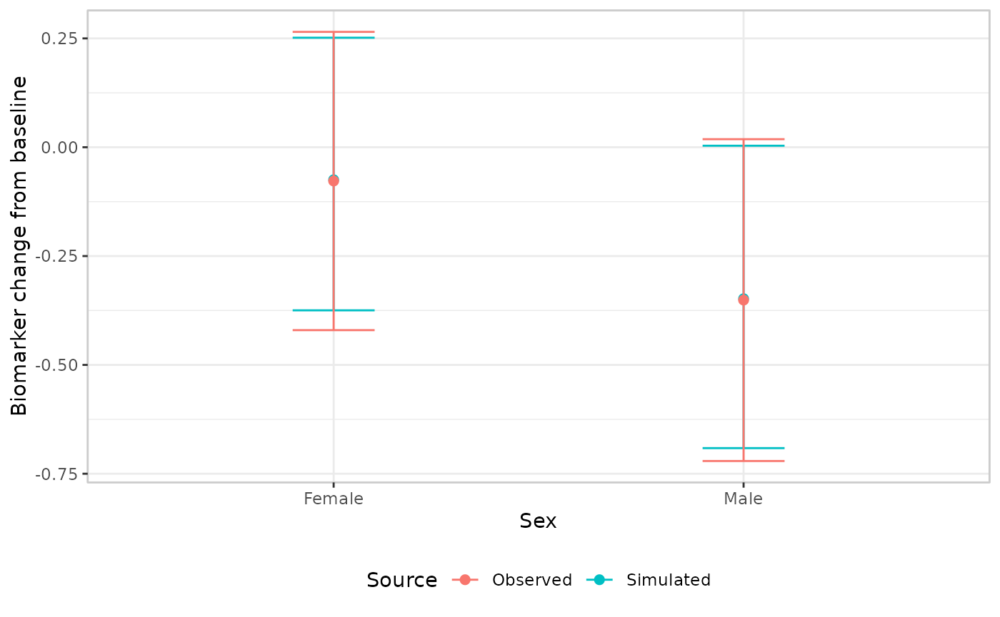
Theming
er_vpc_theme() adjusts labels, titles, axis limits, and
the overall ggplot2 theme, without changing which variable drives which
aesthetic. Every argument defaults to NULL (“leave
unchanged”), so repeated calls only touch the fields they supply:
mod <- erglm_model(ae1 ~ aucss, erglm_data, family = binomial())
erglm_data |>
er_vpc(exposure = aucss, response = ae1) |>
er_vpc_add_observed() |>
er_vpc_add_simulated(model = mod, seed = 1234) |>
er_vpc_theme(
xlab = "AUC at steady state",
ylab = "Probability of event",
title = "Visual predictive check",
theme_base = ggplot2::theme_minimal()
) |>
plot()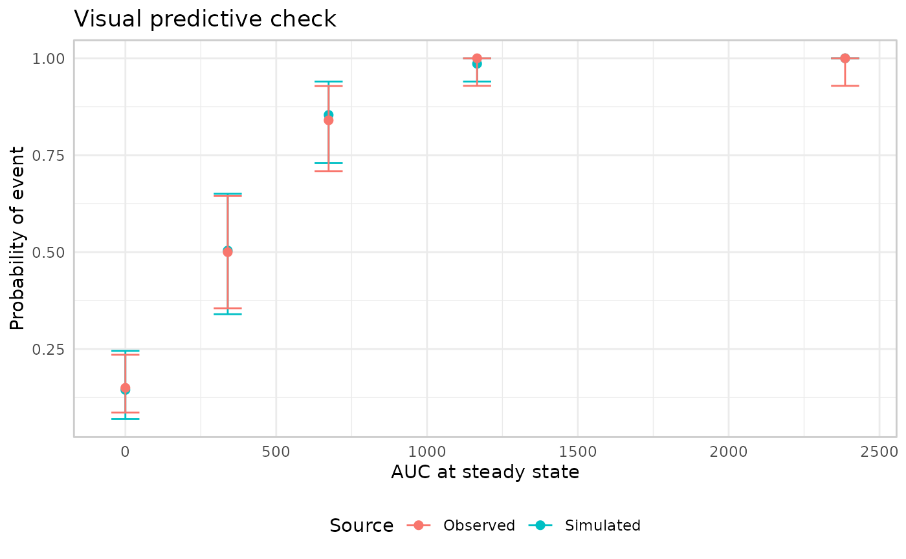
Note that xlab labels plot_by (the VPC’s
actual x-axis variable), not necessarily exposure – the two
only coincide when plot_by wasn’t overridden.
er_vpc_theme() doesn’t cover everything: there’s no
argument for the observed/simulated colour scale, for instance, since
it’s fixed to keep the two aligned across builders that mix colour and
fill for the same distinction. For anything not covered,
+ ggplot2::theme(...)/+ ggplot2::labs(...) on
the object returned by plot() remains the general-purpose
escape hatch.
Troubleshooting plot legibility
A persistent problem when creating VPC plots is cleaning up an
illegible plot. To an extent, this problem is unavoidable: VPC plots
attempt to display a lot of information in a single image, and
it has a tendency to make them difficult to read. Because the specific
pattern of illegibility tends to vary from plot to plot, it is almost
impossible to build in an automated fix to this problem. Instead of
attempting an automated fix that will very likely not work, the
er_vpc() mini-grammar exposes some customization tools that
you can use to clean up a VPC plot that doesn’t look very nice. In this
section, we outline some of the options that you have.
mod <- emax_nls(
structural_model = rsp_1 ~ exp_1,
covariate_model = list(E0 ~ 1, Emax ~ 1, logEC50 ~ 1),
data = emax_df
)Errorbar collisions
We’ll start by creating a deliberately terrible VPC plot, using the
Emax regression in the mod object. Suppose that, for one
reason or another, you have been asked to show five quantiles
for this model rather than the usual three. This is rarely a good idea
because it leads to terrible crowding in the plot. Here’s what happens
if we do this, using errorbar styling for both the observed data and the
model simulations:
emax_df |>
er_vpc(
exposure = exp_1,
response = rsp_1,
response_type = "continuous",
n_bins = 5,
probs = c(0.1, 0.3, 0.5, 0.7, 0.9)
) |>
er_vpc_add_observed(style = er_style_vpc_observed_quantile_errorbar) |>
er_vpc_add_simulated(
model = mod,
seed = 1234,
style = er_style_vpc_simulated_quantile_errorbar
) |>
plot()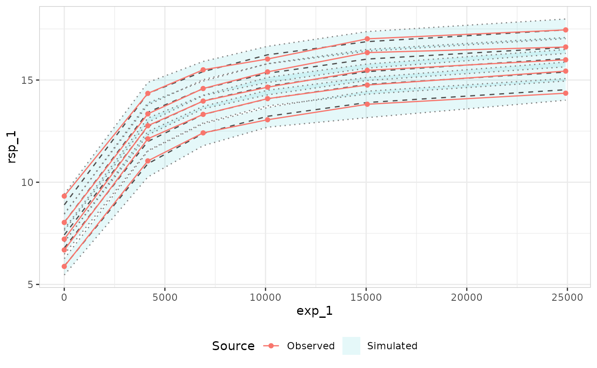
There’s no simple fix for this: in this plot we have unpleasant
collisions between the observed and simulated layers, and
between the five individual probs within each layer.
However, you do have some options. Assuming for the sake of this
vignette that you really do need all five quantiles, and for the moment
assuming that both the simulated and observed layers must be displayed
in an errorbar style, there are three arguments we can tinker with to
improve legibility:
-
dodgeshifts a whole builder’s error bars sideways – pair an equal and oppositedodgeon the observed and simulated builders to pull the two layers apart. -
prob_dodge_widthspreads a single builder’s ownprobsapart, symmetrically around the bin’s true position. -
errorbar_widthnarrows or widens the error bars themselves, giving the eye more room to separate bars that remain close together after dodging
emax_df |>
er_vpc(
exposure = exp_1,
response = rsp_1,
response_type = "continuous",
n_bins = 5,
probs = c(0.1, 0.3, 0.5, 0.7, 0.9)
) |>
er_vpc_add_observed(
style = er_style_vpc_observed_quantile_errorbar,
dodge = -0.005,
prob_dodge_width = 0.005,
errorbar_width = 0.0025
) |>
er_vpc_add_simulated(
model = mod,
seed = 1234,
style = er_style_vpc_simulated_quantile_errorbar,
dodge = 0.005,
prob_dodge_width = 0.005,
errorbar_width = 0.0025
) |>
plot()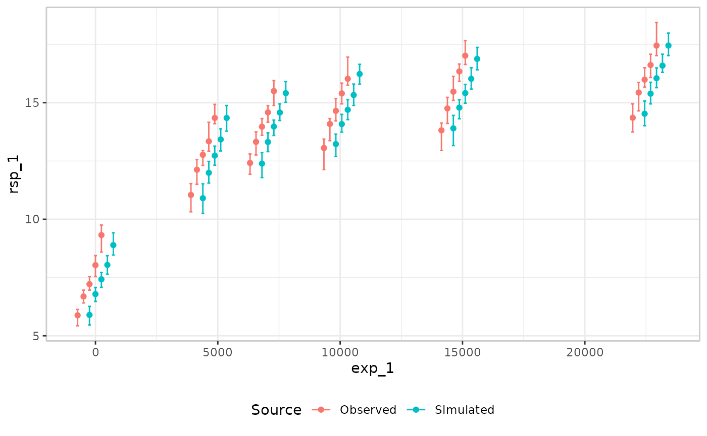
It takes a little bit of trial and error to find values that work in any specific case (and it does help to take a close look at the documentation to see how the different arguments are interpreted), but nevertheless this is a substantial improvement. It is not perfect, but it works reasonably well.
Ribbon collisions
A different kind of legibility issue arises when ribbons are used to display confidence intervals. As before, we’ll illustrate this using the extreme case when five quantiles are being displayed. A common visual style used for VPC plots is to use connected lines for the observed quantiles, and then ribbons to show model predictions and uncertainty at each quantile. In this case, however, the confidence bands are so closely packed together that they blend together visually and it is impossible to tell where the boundaries are:
emax_df |>
er_vpc(
exposure = exp_1,
response = rsp_1,
response_type = "continuous",
n_bins = 5,
probs = c(0.1, 0.3, 0.5, 0.7, 0.9)
) |>
er_vpc_add_observed(style = er_style_vpc_observed_quantile_line) |>
er_vpc_add_simulated(
model = mod,
seed = 1234,
style = er_style_vpc_simulated_quantile_ribbon
) |>
plot()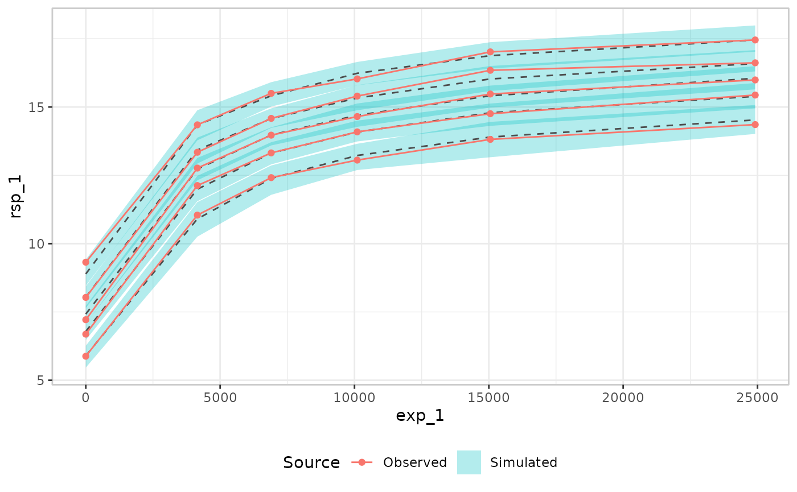
Sometimes you can improve legibility in this case by placing more emphasis on the edges of the bands, and reducing the salience of the band shading. The code below illustrates this, and it helps somewhat, but the plot is still difficult to read:
emax_df |>
er_vpc(
exposure = exp_1,
response = rsp_1,
response_type = "continuous",
n_bins = 5,
probs = c(0.1, 0.3, 0.5, 0.7, 0.9)
) |>
er_vpc_add_observed(style = er_style_vpc_observed_quantile_line) |>
er_vpc_add_simulated(
model = mod,
seed = 1234,
style = er_style_vpc_simulated_quantile_ribbon,
ribbon_alpha = 0.1,
ribbon_edges = TRUE
) |>
plot()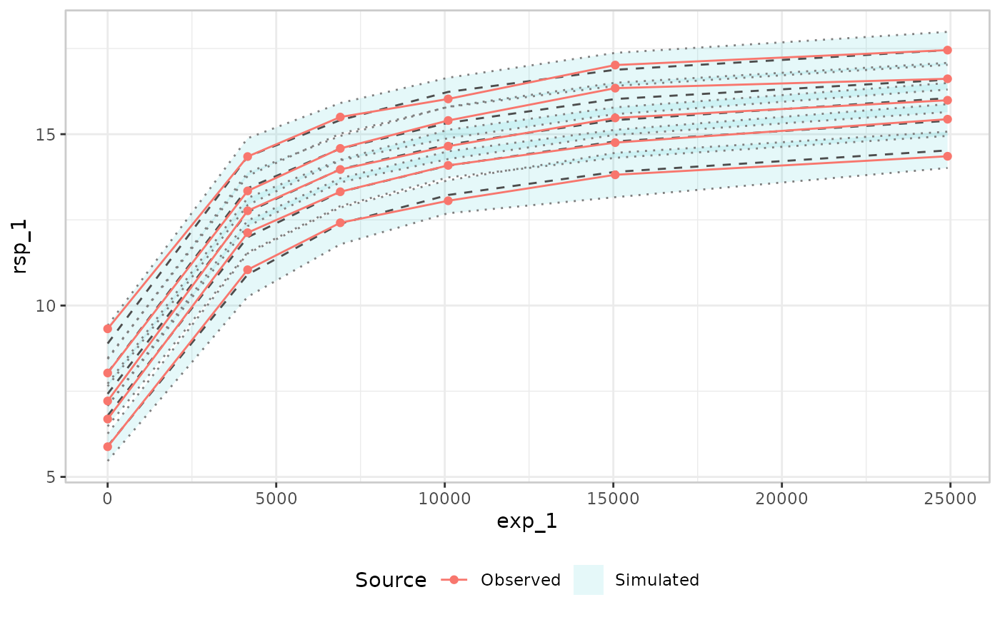
Ultimately, in this situation the most likely resolution is that you would have to revert from five quantile bands to the usual three:
emax_df |>
er_vpc(
exposure = exp_1,
response = rsp_1,
response_type = "continuous",
n_bins = 5,
probs = c(0.1, 0.5, 0.9)
) |>
er_vpc_add_observed(style = er_style_vpc_observed_quantile_line) |>
er_vpc_add_simulated(
model = mod,
seed = 1234,
style = er_style_vpc_simulated_quantile_ribbon,
ribbon_alpha = 0.2,
ribbon_edges = TRUE
) |>
plot()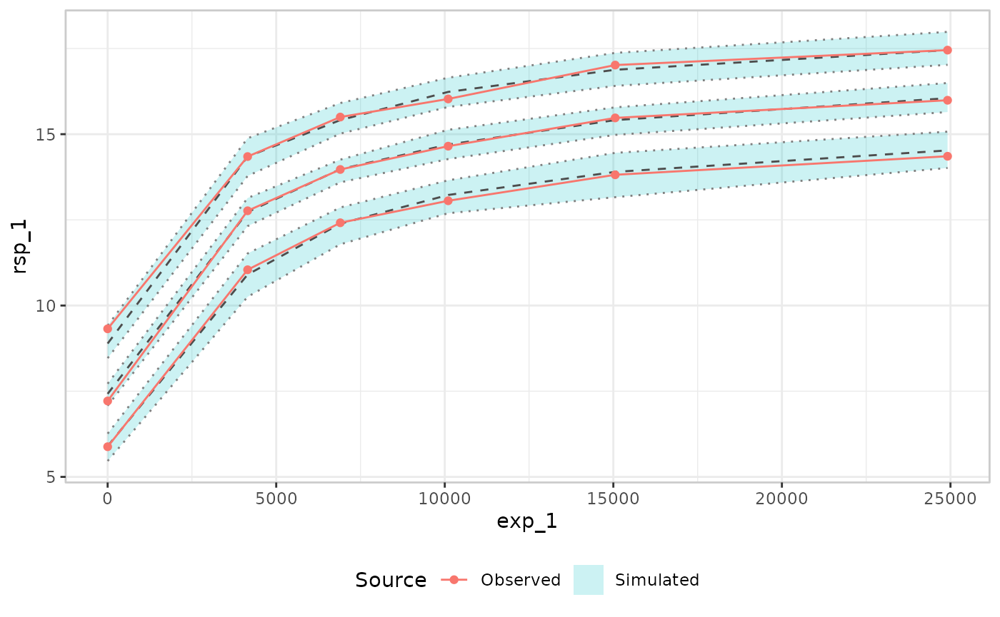
Some of the distributional information is lost, but overall the plot is a lot easier to understand.